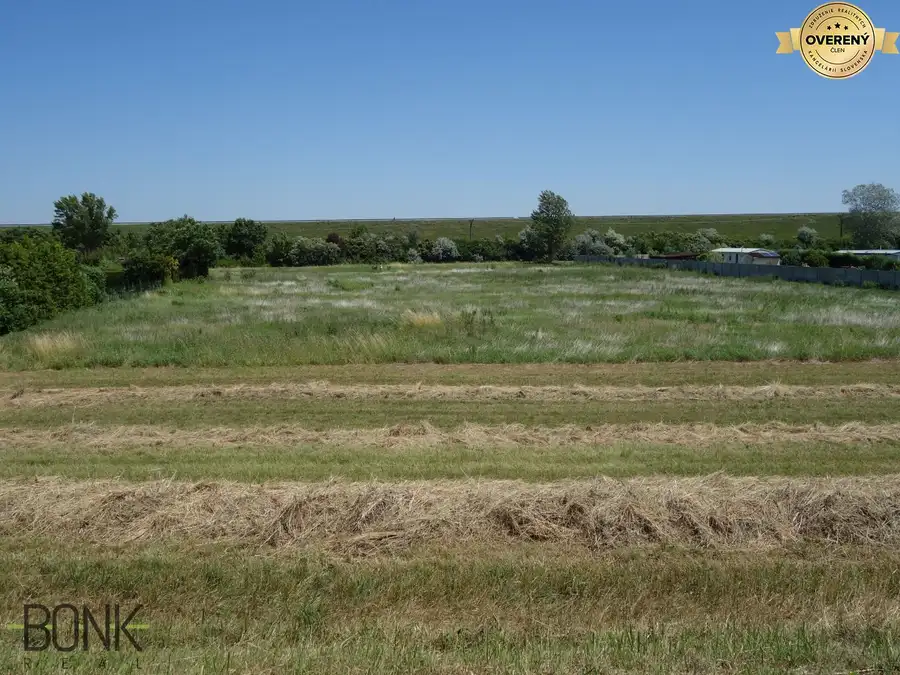
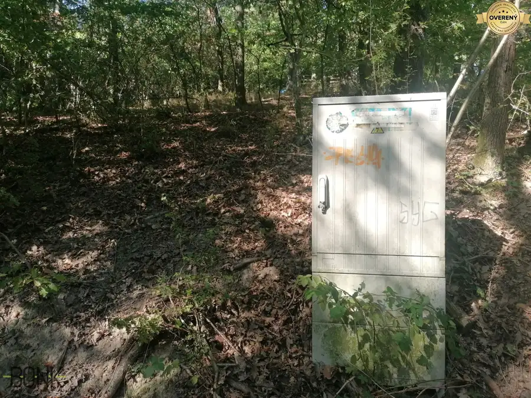
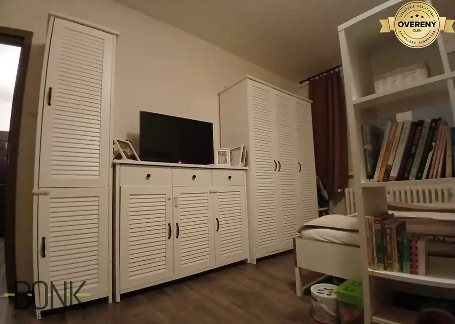

Predaj moderný 4 izbový dom s garážou, blízko Bratislavy, Tomášov.
Tomášov
- Dispozícia4-izbový
- Plocha129 m²
- Poschodie0.
- Energetická triedaA
O nehnuteľnosti
Ponúkame na predaj útulný a moderne riešený 4 - izbový rodinný dom s garážou, nachádzajúci sa vo vyhľadávanej a tichej časti obce Tomášov. Ide o novostavbu skolaudovanú v roku 2025 s energetickým certifikátom A, s najmodernejšou rekuperáciou vo všetkých miestnostiach a tepelným čerpadlom. Dom je kompletne v štandarde aj s kuchynskou linkou so spotrebičmi. Ihneď k nasťahovaniu. Výborná dostupnosť len 12 km od Bratislavy.
Pozrieť video: https://youtube.com/shorts/LMVt_vKQuGE
Dom sa nachádza na Bratislavskej ulici – slepej a pokojnej ulici bez premávky, v pešej dostupnosti kompletnej občianskej vybavenosti (cca 10 minút), vrátane novej predajne Billa.
Dispozícia domu
Dom je navrhnutý veľmi prakticky a funkčne
- vstupná predsieň
- technická miestnosť s WC, umývadlom a priestorom na práčku
- chodba
- obývacia izba s výstupom na terasu
- kuchyňa so špajzou, s kompletnou kuchynskou linkou aj so spotrebičmi
- 3 samostatné izby
- kúpeľňa s vaňou, sprchovým kútom, umývadlom a WC
Hlavné výhody
- moderný, veľmi kvalitný, nízkoenergetický dom, mesačné náklady len 80 - 100Eur pre 4 člennú rodinu
- energetický certifikát A, tepelné čerpadlo, najmodernejšia rekuperácia vo všetkých miestnostiach
- uzavretý projekt len 5 domov, oplotený zo všetkých strán
- tichá a bezpečná slepá ulica bez premávky
- dobrí susedia
- detské ihrisko a parčík do 5 minút pešo
- kompletná občianska vybavenosť do 10 minút pešo
- vynovená a zväčšená škola aj škôlka s voľnými kapacitami 10 minút pešo od domu
- výborná dostupnosť len 12 km od Bratislavy
Technické vybavenie:
- teplovodné podlahové kúrenie ( v kúpeľni aj rebríkové kúrenie), zdroj tepla je tepelné čerpalo: Midea monoblock 8 kw
- najmodernejšia rekuperácia vo všetkých miestnostiach: https://eshop.apen.sk/flexit-nordic-s3/
- vypínače a zásuvky Legrand,
- dátový a satelitný rozvod v každej izbe,
- predpríprava na exteriérové žalúzie,
- na garáži, elektrická diaľkovo ovládaná garážová brána Hormann
- v garáži predpríprava na nabíjanie elektromobilu
- plastové okná (6 komorové s izolačným trojsklom a tepelným rámikom), farba exteriér antracitová, interiér biela,
- bezpečnostné dvere
Kompletný štandard:
- kompletná kuchynská linka aj so spotrebičmi
- plávajúce poodlahy
- obklady, dlažby
- sanita, 2 x wc, 2 x umývadlo, vaňa, sprchový kút
- interierové dvere
Pozemok:
- zámková dlažba (pred domom, chodník okolo domu a na terase),
- oplotenie, okolo celého projektu betónový plot a jednotlivé pozemky oplotené pletivovým plotom antracitovej farby s bráničkou
- terénne úpravy
Pozemok a exteriér
- celková výmera pozemku: 485 m²
- zastavaná plocha: 129 m²
- parkovisko: 43 m² vlastné parkovacie miesta pred domom
- vlastná garáž
- terasa
- súkromná cesta
Vstup je zabezpečený bráničkou pre peších a elektrickou bránou na diaľkové ovládanie. Celý projekt aj každý dom sú kompletne oplotené, čo vytvára bezpečné a príjemné prostredie.
Financovanie bez starostí
Radi vám zabezpečíme hypotekárne financovanie:
- najvýhodnejšie úrokové sadzby (spolupráca so všetkými bankami)
- rýchle a bezproblémové schválenie
- do banky pôjdete iba raz – pri podpise zmlúv
Potrebujete najprv predať inú nehnuteľnosť?
Zabezpečíme sprostredkovanie predaja alebo rýchly odkup aj v pôvodnom stave.
Kontakt
Milan Bonk – mail: Obhliadky sú možné aj cez víkend.
Neváhajte ma kontaktovať – tento dom je ideálnou voľbou pre pokojné a moderné rodinné bývanie.
Parametre
| Rozloha pozemku | 485 m² |
|---|---|
| Zastavaná plocha | 129 m² |
| Celková rozloha | 129 m² |
| Úžitková plocha | 129 m² |
| Poschodie | prízemie |
| Počet izieb | 4 |
| Voda | verejný vodovod |
| El. napätie | 230/400V |
| Plyn | nie |
| Kanalizácia | áno |
| Internet | optika |
| Kúpeľňa | vaňa a sprchovací kút |
| Vykurovanie | vlastné - elektrické |
| Terasa | áno |
| Garáž | áno |
| Parkovanie | áno |
| Inžinierske siete | áno |
| Postavené z | Ytong |
| Zateplený objekt | áno |
| Energetický certifikát | A |
| Bezbariérový prístup | áno |
| Okná | plastové |
| Terén | rovina |
| Prístupová cesta | betónová cesta |
| Novostavba | áno |
| Dátum zverejnenia | 13. 1. 2026 |
Kde to je
Mohlo by Vás zaujímať

Pozemok5 84 950 €Predaj pozemku 1700 m2 obdĺžnikový tvar, možnosť rozdeliť na dva. Rohovce 1700 m² Predaj krásneho rovinatého obdĺžnikového pozemku, situovaného medzi hrádzou a hlavnou cestou, prístup na pozemok z dvoch strán, možnosť rozdeliť na…
Pozemok4 69 900 €Predaj pozemku 537 m2, elektrina priamo na pozemku, Limbach Limbach 537 m² Pozemok má tvar písmena L a je určený na výstavbu rekreačnej chaty aj na celoročné bývanie. UPI k dispozícii. Pozemok je vedený ako trvalý trávnatý…
Byt10 174 000 €Predaj kompletne prerobený 1 izbový byt, Nejedlého ulica, Dúbravka. Dúbravka, Bratislava 1-izbový35.5 m²8. podlažie Na predaj útulný, kompletne prerobený 1 izbový byt 35,5 m2 v kompletne zrekonštruovanom a zateplenom dome, nová strecha, stupačky. Tichá a bezpečná…